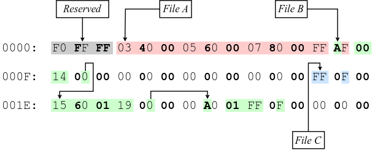

Understanding the FAT file system
Table of Contents
1. Introduction
The FAT file system was originally developed by Microsoft for the MS-DOS operating system. I have been working on a FAT parsing tool for some days, and I wanted to explain some of the things I have learned.
Although I will try to cover all FAT filesystems, note that I currently have experience with FAT12, which is used in floppy disks; if I work on newer FAT versions in the future, I will update this article with any relevant information. The exFAT filesystem is not covered in this article.
The following figure shows the general layout of a FAT12/FAT16 volume (although the FAT32 layout is very similar), each of which will be described in detail below.

Figure 1: General layout of a FAT12/FAT16 volume.
Throughout this article I might reference the “FAT specification”, that is,
version 1.03 of the “FAT32 File System Specification”, which can be found as
fatgen103.pdf.
2. CHS and LBA notations
When referring to locations of a disk, the term sector is commonly used. A sector is simply a fixed-size block of contiguous bytes, which is the minimum storage unit of a hard drive. There are two common notations used to describe the position of a sector in the disk, Cylinder-Head-Sector and Logical Block Addressing; although only the latter will be used in this article, both of them will be briefly explained here.
- Cylinder-Head-Sector (CHS) notation
A group of 3 numbers in used to designate the physical location of a block of data in a hard disk. The cylinder (or track) indicates the radial coordinate relative to the center of the platter, the head indicates the platter and side where the data is, and the sector indicates the angular coordinate relative to the platter. The following figure shows these 3 coordinates in a hard disk.

Figure 2: Cylinder-Head-Sector representation on a hard disk.
Note that the cylinder and head numbers start at 0, but the first sector number in CHS notation is 1, not 0. For more information, see the Wikipedia page for Cylinder-Head-Sector, where that image was originally extracted from.
- Logical Block Addressing (LBA) notation
- A single index, starting from 0, is used to linearly identify a block of data
(usually a single sector) in a hard disk. Therefore, LBA address 0 corresponds
to CHS address
0/0/1.
3. Boot sector
The first sector of the FAT volume is the Boot Sector. The following figure1 shows the highlighted hexdump of a FAT12 boot sector, showing the different parts that will be explained below.

Figure 3: Layout of a FAT12 boot sector.
3.1. Initial bytes
The first 3 bytes of the sector are a short jmp instruction followed by a nop
byte, used if the volume is bootable. The next 8 bytes are the OEM name, padded
with spaces (0x20). This is usually the name of the tool that was used to build
the filesystem image (e.g. mkfs.fat).
3.2. Bios Parameter Block (BPB)
After the OEM name, it comes the BIOS Parameter Block (BPB), a data structure describing the layout of the volume. The following table describes the contents of the base BPB, common in all FAT filesystems.
| BPB Offset | Type | Description |
|---|---|---|
0x00 |
uint16_t |
Bytes per logical sector |
0x02 |
uint8_t |
Logical sectors per cluster |
0x03 |
uint16_t |
Reserved logical sectors |
0x05 |
uint8_t |
Number of FATs |
0x06 |
uint16_t |
Root directory entries |
0x08 |
uint16_t |
Total logical sectors |
0x0A |
uint8_t |
Media descriptor |
0x0B |
uint16_t |
Logical sectors per FAT |
0x0D |
uint16_t |
Physical sectors per track |
0x0F |
uint16_t |
Number of heads |
0x11 |
uint32_t |
Hidden sectors |
0x15 |
uint32_t |
Large total logical sectors |
FAT filesystems extend this structure with different fields, and the final structure is usually called Extended BIOS Parameter Block (EBPB). Please note that the term “BPB” will be used when refering to the base structure described in the first table, which is shared by all filesystem versions, while the term “EBPB” will be used when refering to one of the other two tables and its contents.
The following table describes the extra fields in FAT12 and FAT16 volumes.
| BPB Offset | Type | Description |
|---|---|---|
0x19 |
uint8_t |
Physical drive number |
0x1A |
uint8_t |
Reserved |
0x1B |
uint8_t |
Extended boot signature (0x29, see below) |
0x1C |
uint32_t |
Volume serial number |
0x20 |
char[11] |
Volume label (padded with spaces) |
0x2B |
char[8] |
File-system type (padded with spaces) |
And the next table describes the extra fields in FAT12 volumes.
| BPB Offset | Type | Description |
|---|---|---|
0x19 |
uint32_t |
Logical sectors per FAT |
0x1D |
uint16_t |
Mirroring flags etc. |
0x1F |
uint16_t |
Version |
0x21 |
uint32_t |
Root directory cluster |
0x25 |
uint16_t |
Location of FSInfo sector |
0x27 |
uint16_t |
Location of backup sector(s) |
0x29 |
char[12] |
Reserved |
0x35 |
uint8_t |
Physical drive number |
0x36 |
uint8_t |
Reserved |
0x37 |
uint8_t |
Extended boot signature (0x29) |
0x38 |
uint32_t |
Volume serial number |
0x3C |
char[11] |
Volume label (padded with spaces) |
0x47 |
char[8] |
File-system type (padded with spaces) |
Note that, in both the FAT12/FAT16 and FAT32 versions, the value of the Extended
boot signature field should be 0x29 to indicate that there are 3 fields left at
that point; a value of 0x28, on the other hand, would indicate that there is
only one field left, the Volume serial number. Originally, byte 0x28 was used to
indicate that the volume was using the DOS 3.4 EBPB, while byte 0x29 indicated
the EBPB for DOS 4.0 version.
3.3. Extra data and magic value
The remainder of the sector (up to offset 509, included) can be used to store
executable instructions, which are normally the destination of the jmp
instruction mentioned above; or to store any extra data that the system might
need.
The bytes at offset 510 and 511 should be 0x55 and 0xAA, respectively, a magic
value that indicates the BIOS that the sector is bootable. Note that this magic
value might be written as 0x55AA or 0xAA55 depending on the machine’s
endianness, but the BIOS will expect byte 0x55 first, followed by 0xAA, so it’s
better to write them separately to avoid confusion.
These two bytes are usually the last ones of the first sector, since the Bytes per logical sector field of the BPB structure is usually 512, but they don’t necessarily have to be. The BIOS will check the bytes at offset 510 and 511, not at the end of the sector.
4. FSInfo sector (FAT32 only)
This data structure is specific to FAT32, so I haven’t used it at this point, but I will still mention it. It’s usually located in the second sector (sector 1), but this is determined by the Location of FSInfo sector field of the FAT32 EBPB.
The FSInfo data structure contains, among some hard-coded signatures, the last known number of free sectors in the volume and the cluster number where the driver should start looking for free clusters. This information is not strictly necessary, but it helps with performance, since the 32-bit FAT can be quite large.
For now, you might want to check the Wikipedia section, and pages 21-22 of the FAT32 specification.
5. File Allocation Table (FAT)
The next important data structure is the File Allocation Table itself. There may be more than one FAT, depending on the fourth field of the BPB, but the first FAT is always located right after the reserved sectors (such as the boot sector). We can obtain the number of reserved sectors from the third field of the BPB.
5.1. The purpose of the FAT
The FAT is an array of numbers that is used to define linked lists of the clusters that form the contents of a file. In order to fully understand this definition, some concepts need to be explained first.
Just like a sector is a fixed-size block of contiguous bytes, a cluster is simply a fixed-size group of contiguous sectors. The number of sectors that form a cluster can be obtained from the second field of the BPB. For example, if each cluster is 4 sectors (according to the second field), and each sector is 512 bytes (according to the first field), a cluster would use 2048 contiguous bytes.
The meaning of the term file can vary depending on the context and the level of
abstraction, but it will be used in this context to refer to a data structure
that contains information (i.e. metadata) about some arbitrary amount of data
(i.e. the actual file contents). A file structure, which will take the name
DirectoryEntry below, contains information such as the filename, the size of the
data in bytes, and the creation and access dates.
While this file metadata is stored in some place that will be discussed below, the actual contents of the file are stored in one or more clusters (which are not necessarily adjacent to each other) in the data region. The data region is located after the root directory, as shown in Figure 1.
For example, if the cluster size was 2KiB and we wanted to store an 11KiB file, we would need to somehow build a 6-element list that kept track of the clusters that store that file’s data (the last one won’t be full, but still “owned” by this file).

Figure 4: File contents stored in 6 non-adjacent clusters.
Given a specific cluster index, there would need to be a way of retrieving the index of the next cluster on its list. To accomplish this, each cluster in the volume is assigned an entry in the FAT sequentially, so the first cluster would be assigned to entry 0 of the FAT, the second element to entry 1, and so on (this is not entirely accurate, as explained below). Each entry in the FAT will then contain the cluster index of its next element, or a special marker to indicate the end of the linked list2.
For example, in order to build the cluster list represented in the previous figure, the following pseudo-code could be used. In this case, value of the end-of-chain marker assumes that this is a 16-bit FAT.
fat[0] = 2; /* Cluster 1 is skipped */ fat[2] = 3; fat[3] = 4; fat[4] = 5; fat[5] = 7; /* Cluster 6 is skipped */ fat[7] = 0xFFFF; /* Mark end of chain */
As shown below, this is not entirely accurate, since the first data cluster is not mapped to the first element of the FAT. Either way, the important note is that the FAT is used to keep track of the clusters that store the contents of files, by building linked lists with their cluster indexes.
5.2. The layout of the FAT
The size of each FAT entry changes depending on the filesystem version, and that is precisely what the 12/16/32 number indicates: the size of a FAT entry in bits. The 16-bit version will be used for explaining the layout of the FAT, since each entry is two bytes, and therefore easier to understand. The layout of a 32-bit FAT is pretty similar, the size of each element is just twice as big. The 12-bit version, however, is more tricky since it uses one bit and a half (i.e. 3 nibbles), so it will be explained in detail below.
The following figure shows the hexdump of the first 64 bytes of a 16-bit FAT. Each (non-empty) entry has been highlighted to show their linked list. Please note that the hexadecimal offsets in the following figure are expressed in bytes, but the FAT stores the linked lists with indexes to other 16-bit entries.

Figure 5: Layout of a 16-bit File Allocation Table.
The first thing that should be noted about the FAT, and about the filesystem in
general, is that it’s strictly little-endian, meaning that the least-significant
bytes are stored at a smaller offset in the disk (i.e. the value 0xAABBCCDD
would be stored as DD CC BB AA). The previous figure shows a hexdump, and
although the bytes are grouped in pairs, they are dumped one by one, in the
order in which they are stored in the disk. For example, the contents of the
third 16-bit entry are displayed as 0300, but actually correspond to the value
0x0003. This will be specially important later when describing the layout of a
12-bit FAT, since each entry is one byte and a half.
The first two entries of the FAT are reserved, the first one usually being the FAT ID, and the second usually being the value used as the end-of-chain marker. Therefore, the first data cluster would correspond to the third entry of the FAT, not the first one. Since the linked lists themselves are built using “absolute” indexes in the FAT, the real cluster indexes can be calculated by subtracting 2 from the value stored in the FAT. For example, in the previous figure, entry 4 of the FAT contains the value 5, so the real index of the next cluster in the list would be 3, since it’s the fourth actual cluster in the volume.
As noted above, the 12-bit FAT is a bit more complicated, because each entry is one byte and a half. To The following figure shows how the previous 16-bit FAT would be represented with 12-bits per entry. Since each entry is 3 nibbles, and the structure is little-endian, nibbles in entries with an odd index have been highlighted in bold, to hopefully make it easier to visualize.

Figure 6: Layout of a 12-bit File Allocation Table.
Also note how there are 15 bytes per row in this figure, instead of 16 like in
the previous one. This has been done to avoid having one byte of the entry in
one line (e.g. the 0x14 at offset 0x0F) and the third nibble in another line
(e.g. the lower half of the byte at offset 0x10).
Just to emphasize again, since the byte ordering can be confusing in this version, the following example shows how the entries are distributed and nibbles ordered in the 12-bit FAT.
Entry distribution: AA BA BB CC DC DD EE FE FF ... `------´ `------´ `------´ Two Two Two entries entries entries Nibble order: 23 61 45 89 C7 AB EF 3D 12 ... `------´ `------´ `------´ 0x123, 0x789, 0xDEF, 0x456 0xABC 0x123
6. Root directory
As mentioned above, the metadata that was refered to as a file is represented as
a data structure called DirectoryEntry. The root directory is simply an array of
these structures. Before explaining how to determine the array location and
size, the layout of a single element needs to be defined.
6.1. The DirectoryEntry structure
The following table shows the fields of the DirectoryEntry structure.
| Offset | Type | Description |
|---|---|---|
0x00 |
char[11] |
Short file name |
0x0B |
uint8_t |
File attributes |
0x0C |
uint8_t |
Reserved |
0x0D |
uint8_t |
Creation time (tenths of a second) |
0x0E |
uint16_t |
Creation time (hour, minute, second) |
0x10 |
uint16_t |
Creation date (year, month, day) |
0x12 |
uint16_t |
Last access date (year, month, day) |
0x14 |
uint16_t |
High word of the first cluster index (for FAT32) |
0x16 |
uint16_t |
Modification time (hour, minute, second) |
0x18 |
uint16_t |
Modification date (year, month, day) |
0x1A |
uint16_t |
Low word of the first cluster index |
0x16 |
uint32_t |
Size in bytes |
The name field follows the 8.3 filename scheme, where the first 8 bytes of the array are the file name padded with spaces, and the last 3 bytes are the file extension.
Each bit in the File attributes field indicates a different property, according to the following table.
| Mask (hex) | Mask (binary) | Description |
|---|---|---|
0x01 |
0b00000001 |
Read only |
0x02 |
0b00000010 |
Hidden |
0x04 |
0b00000100 |
System |
0x08 |
0b00001000 |
Volume ID |
0x10 |
0b00010000 |
Directory |
0x20 |
0b00100000 |
Archive |
0x40 |
0b01000000 |
Reserved (device) |
0x80 |
0b10000000 |
Reserved |
0x0F |
0b00001111 |
Long name |
The third field of a DirectoryEntry contains the creation time in tenths of a
second, and its value range is [0..199]. The dates and times in the structure
are stored as 16-bit integers with the following layouts:
Time: hhhhhhmmmmmsssss
`----´`---´`---´
Hour Min Sec
Date: yyyyyyymmmmddddd
`-----´`--´`---´
Year Mon Day
6.2. Location and size of the root directory
Just like the EBPB changes between FAT12/FAT16 and FAT32, the method for determining the location and size of the root directory also change. These differences will be explained now.
- Location and size in FAT12 and FAT16
In FAT12 and FAT16, this array is located right after the FAT(s), so the sector number can be calculated by multiplying the number of FATs by the size of a FAT, and adding that to the number of reserved sectors. All three of these values can be obtained from the base BPB.
The number of
DirectoryEntryelements of the array is determined by the Root directory entries field of the BPB.- Location and size in FAT32
In FAT32 filesystems, the location of the root directory is determined by the Root directory cluster entry of the EBPB, which usually has a value of 2, but not necessarily.
In FAT32 filesystems, the Root directory entries field of the BPB must be set to zero, so the number of entries is calculated by following the chain of cluster indexes that is stored in the FAT, just like any other directory.
Once the location and size of the root directory is known, it can be accessed like a normal array, each element being 32 bytes.
7. Data region
At this point, it has been explained how to access the data in the EBPB, how to
access and navigate the FAT, and how to obtain the array of DirectoryEntry
structures in the root directory. With this information, it should be possible to:
- Iterate the root directory, searching for files that match certain properties (e.g. whose name matches X, that was created before the Y date).
- Obtain the first cluster index of that file.
- Traverse the linked list of cluster indexes through the FAT.
However, it’s necessary to know where these clusters are, and how they can be accesses to read the actual contents of files. The contents of the files are stored in the data region, so the sector where this region starts should be calculated first. Before explaining how the first data sector is calculated, it’s necessary to know how to calculate the size of the root directory.
7.1. Calculating the size of the root directory
The size of the root directory in sectors can be calculated by multiplying its number of entries by the size of a single entry in bytes, dividing that by the number of bytes per sector, and rounding up:
const uint32_t root_dir_bytes = bpb->root_dir_entry_count * sizeof(struct DirectoryEntry); uint32_t root_dir_sectors = root_dir_bytes / bpb->bytes_per_sector; if (root_dir_bytes % bpb->bytes_per_sector != 0) root_dir_sectors++;
Alternatively, as recommended in page 13 of the FAT specification, one can round up by adding the number of bytes per sector minus one before performing the integer division:
const uint32_t root_dir_bytes = bpb->root_dir_entry_count * sizeof(struct DirectoryEntry); const uint32_t root_dir_sectors = (root_dir_bytes + (bpb->bytes_per_sector - 1)) / bpb->bytes_per_sector;
Note that, on FAT32, the Root directory entries field of the BPB is zero, so the result of these operations will also be zero. This is expected when calculating the first data sector below.
7.2. Calculating the first data sector
The first data sector can be calculated by adding the number of reserved sectors (such as the boot sector), the number of sectors used by the FAT(s), and the number of sectors used by the root directory.
The number of reserved sectors can be obtained from the third field of the BPB, as explained when calculating the location of the FAT. The number of sectors used by the FAT is determined by either the Logical sectors per FAT field of the base BPB, or, if it’s zero, by the Logical sectors per FAT field of the FAT32 EBPB. The number of sectors of the root directory is calculated using any of the methods from the previous section; again, note that this value is expected to be zero in FAT32.
const size_t sectors_per_fat = (bpb->sectors_per_fat_16 == 0) ? bpb->sectors_per_fat_16 : ebpb->sectors_per_fat_32; const uint16_t reserved_sectors = bpb->reserved_sectors; const uint32_t total_fat_sectors = bpb->fat_count * sectors_per_fat; const uint32_t root_dir_sectors = /* Shown above */; const uint32_t first_data_sector = reserved_sectors + total_fat_sectors + root_dir_sectors;
7.3. Reading the contents of a file
With this information in mind, it should be possible to calculate the clusters numbers where the file contents are stored, and the sector when the data region starts, therefore allowing us to read all the necessary sectors that contain the file contents. This is the general algorithm for accomplishing this:
- Obtain the sector where the FAT starts, the sector where the root directory starts, and the size in sectors of the root directory. All this has been explained above.
- Search for the file by iterating the root directory until the name field of a
DirectoryEntrystructure matches the filename you are looking for. - Obtain the first FAT index in the chain of clusters that hold the contents of the
file. This index can be obtained from the Low word of the first cluster index
field of the
DirectoryEntry. Note that this index is for the FAT, it’s not the real cluster number in the volume. - Calculate the real cluster number by subtracting 2 (i.e. the number of reserved FAT entries) from the FAT index that was just obtained.
- Calculate the sector number by multiplying the real cluster number by the number of Logical sectors per cluster (second element of the BPB), and adding that to the number of sectors before the Data region, as explained above.
- Somehow read from the disk a cluster worth of sectors, starting at the sector number from the previous step.
- Obtain the next FAT index by reading the value stored at the FAT entry
corresponding to the current FAT index (i.e.
fat_idx = fat[fat_idx]). - If the new FAT index is smaller than the end-of-chain marker, go back to step 2. Otherwise, we are done with the file.
In FAT32, when reading the FAT index, you will need to also use the High word of
the first cluster index field of the DirectoryEntry.
Also note that, as explained above, getting the next FAT index might be more complicated depending on the endianness of the machine, since all the structures in the FAT filesystem are little-endian.
8. Final note
As explained in the introduction, I have only worked with FAT12, and although I tried to include as much information about FAT16 and FAT32 as possible, it’s very likely that I have made some mistakes or left some information out. If you find any errors, or have any suggestions, feel free to contribute.
Footnotes:
Some diagrams in this article have been exported as PNG because some
browsers didn’t display the text highlighting correctly. The SVG version, which
can be edited using draw.io, is also available, just change the file extension
from .png to .svg.
For FAT12, this end-of-chain marker is
any value greater or equal than 0xFF8; for FAT16, any value greater or equal
than 0xFFF8; and for FAT32, any value greater or equal than 0xFFFFFFF8.